求解线性方程组与最小二乘问题是科学计算的中心问题之一.根据系数矩阵的性态,我们将采取不同的算法处理.
当要求解的线性方程组中系数矩阵是满秩方阵且无特殊结构 (如对称性质) 时,通常采用Gauss消元法求解.
 三角方程组
三角方程组
当系数矩阵为下三角矩阵时,通过逐步向前代入可以得到方程组的解.可用MATLAB语法将此算法描述如下:
 .假定
.假定 .
.还有另一种求解形式,可称为列形式的向前消去法:
对上三角方程组,我们也有相应的方法,称为向后消去法,它也有行形式和列形式.以上各算法均需要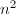个flop.由于不同的数据调用模式 (行形式或列形式)对应不同的数据存储格式 (按行或按列存储)具有不同的效率,(这和计算机的内存调用过程有关,)因此,对于不同的数据结构,我们可以合理地选择不同的数据调用模式.Higham[1]指出,三角方程组的求解精度可以达到"惊人"的好. .
.
选主元的分解
对于一般的满秩线性方程组,我们采用Gauss变换将其化为三角方程组求解.这一过程的实质即将系数矩阵 分解为下三角阵
分解为下三角阵 与上三角阵
与上三角阵 之积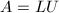,通过求解三角方程组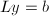及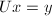得到原方程组的解.
之积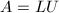,通过求解三角方程组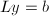及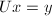得到原方程组的解.
Gauss变换对应于矩阵的操作为初等行变换[2],但仅这两种操作并不能保证算法的成功与稳定性,必须辅之以一定的选主元(pivoting)操作,即通过行(或列)置换将绝对值最大的元素调整到操作对象的位置上,保证行变换的有效性和精确性.主要有全选主元与列选主元两种方式.
全选主元即在第步将主子阵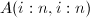中模最大的元素通过行列置换交换到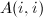位置,之后通过将第行适当的倍数加到第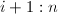行上,将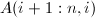化为0,将更新.对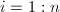执行后,得到分解形式:,其中 ,
, 为置换阵.此算法需要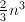个flop和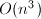次比较.由于选主元的过程会增加很大的搜索量,所以这种算法通常只用于确定矩阵的数值秩等精度要求很高的运算上,一般并不采用.
为置换阵.此算法需要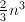个flop和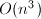次比较.由于选主元的过程会增加很大的搜索量,所以这种算法通常只用于确定矩阵的数值秩等精度要求很高的运算上,一般并不采用.
综合考虑稳定性与运算复杂性,通常采用如下描述的列选主元过程.所谓列选主元,即在第步运算前通过比较得到第列中模最大的元素并通过行置换将其交换到的位置,再采用Gauss变换将矩阵化为上三角形.最终得到分解,其中为行置换矩阵.这一算法也需要次flop,但仅需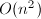次比较操作.
需要指出,有些特殊情形是不必选主元的.比较明显的一个例子是系数矩阵为对角严格占优矩阵.
迭代法改进问题精度
设通过列选主元已求解,并且我们需要改进计算值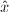的精度.如果我们执行如下的迭代改进
则在精确计算下,我们将得到原方程组的精确解.但由于有限精度计算导致的精度只有很少几位有效数字,我们事实上得到的不会比有更多精度.因此,我们有必要用扩充精度的浮点数运算来计算
余量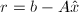.典型地,如果位数运算用来计算,,和 ,则用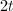位数运算,即双精度来计算余量,这一过程可以迭代,即一旦我们计算得到和初始化,我们可重复以下过程:
我们称此过程为混合精度迭代改进.在双精度计算时,必须用原始的.其基本结论可粗略地叙述如下:
,则用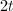位数运算,即双精度来计算余量,这一过程可以迭代,即一旦我们计算得到和初始化,我们可重复以下过程:
我们称此过程为混合精度迭代改进.在双精度计算时,必须用原始的.其基本结论可粗略地叙述如下:
如果机器精度 和条件数满足和,则执行迭代改进
和条件数满足和,则执行迭代改进 次之后,有大约
次之后,有大约 位正确的有效数字.
位正确的有效数字.
粗略地说,如果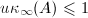,则迭代改进完全可给出一个全(单精度)的正确的解.注意到此过程是相对经济的,每次改进工作量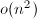,相比之下原始的分解的工作量为.当然,若相对于机器精度是足够坏的条件数,则得不到任何改进.混合精度的迭代改进的一个主要缺点是它的实现是与机器相关的,另一个不足之处是需要保留的原始数据.
参考文献
[1]The Accuracy of Solutions of Triangular Systems, SIAM J. Numer. Anal. 26 (1989), 1252-1265.
[2]高等代数学, 清华大学出版社, 北京, 2004.